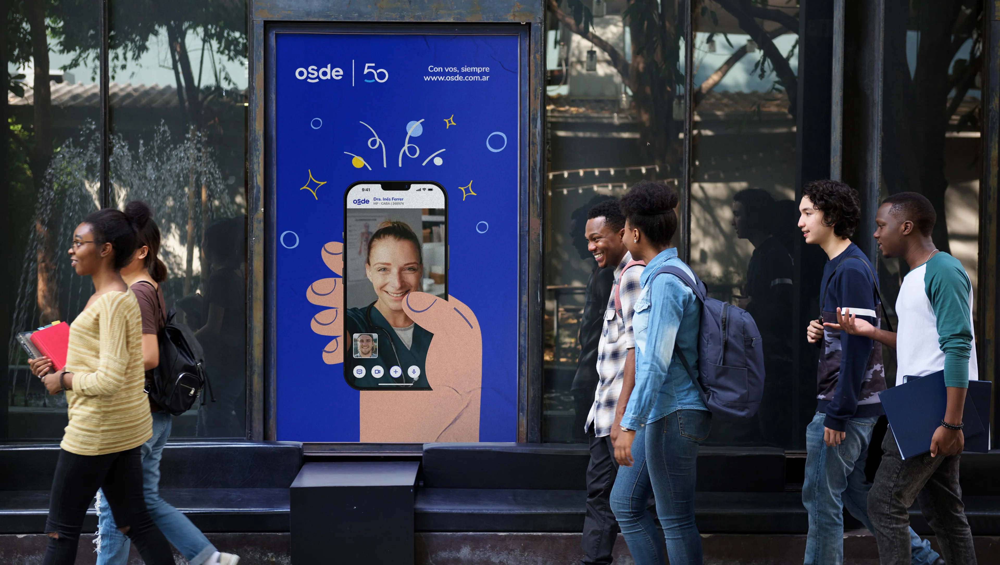

OSDE · Cartilla Digital
Un caso de UX centrado en simplificar la busqueda dentro de la Cartilla Digital, combinando investigacion, pruebas con usuarios, arquitectura de informacion e iteraciones posteriores al lanzamiento.
Participacion dentro del equipo de UX en investigacion, entrevistas, pruebas de usabilidad, wireframes, analisis heuristico y trabajo junto al equipo UI.
La busqueda necesitaba evolucionar para ser mas simple, incorporar busqueda por nombre y mejorar la navegacion por categorias y especialidades.
Antes de implementar se realizaron investigaciones, entrevistas y pruebas de usabilidad. La segunda propuesta fue iterada y termino siendo la base de la version implementada.
La nueva cartilla convivio con la anterior mientras se invitaba progresivamente a usuarios reales y se analizaban Analytics, Hotjar, grabaciones de sesiones y encuestas.
